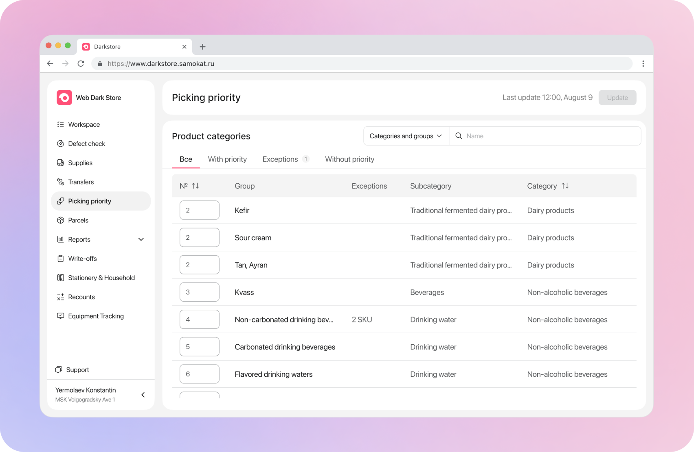
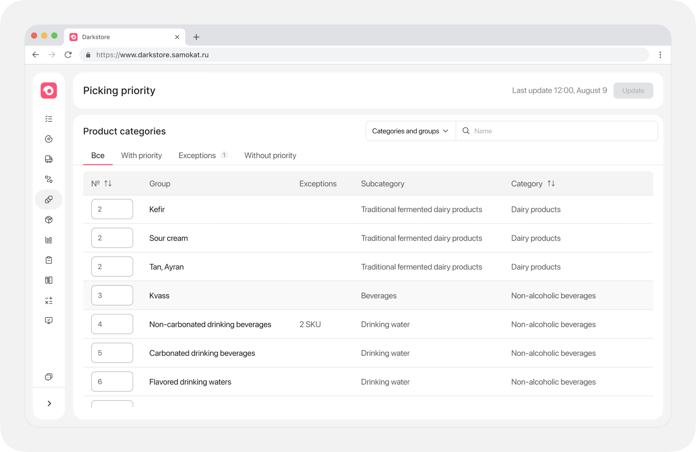
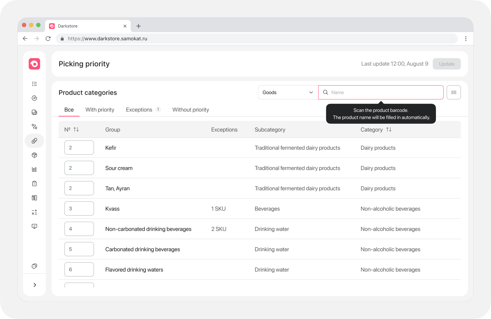
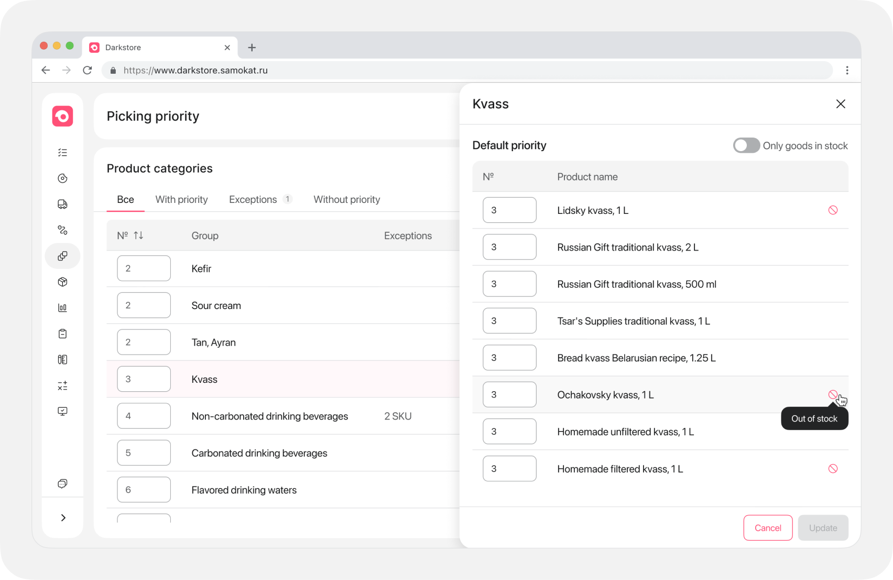
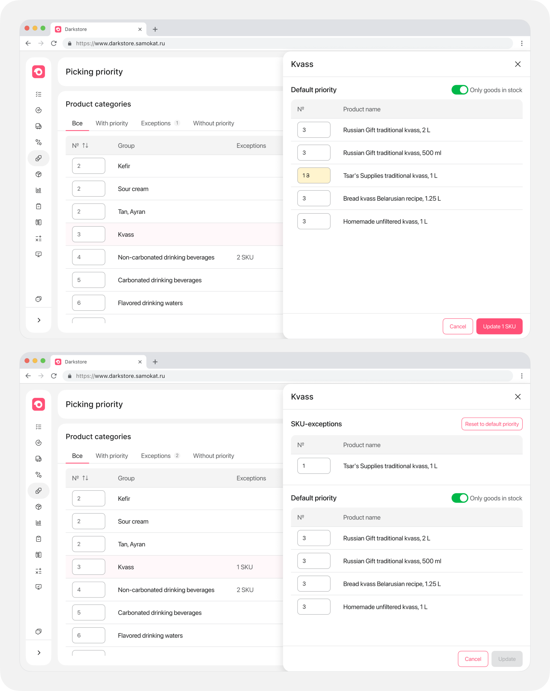

Picking priority

A web tool designed to optimize the order picking sequence based on product locations within a darkstore.
Metrics
• Time to Task
• User Satisfaction (UMUX)
• Usage (DAU)
• User Satisfaction (UMUX)
• Usage (DAU)
DAU
4K+
Dark Stores
2 400
Problem
The previous system was outdated; administrators could only set priorities for entire product groups, and new products often lacked clear group assignment, forcing admins to use external services for clarification.
My role
Worked end-to-end on\u00A0the project: from\u00A0discovery and\u00A0problem definition through design to\u00A0final release
• Conducted 6 interviews with
administrators
• Created CJMs and user stories
• Performed HMW analysis
• Conducted 6 UX tests
• Managed the A/B test on 1,175
locations
• Full rollout to 2,400 dark stores
The main insight
Administrators need transparency and speed; direct visibility of group contents and individual SKU exceptions are crucial for operational efficiency.
Hypotheses
Universal search with barcode scanning
reduces Time to Task
Time to Task
Individual SKU exceptions within groups
improve picking speed
Picking Speed
Direct visibility of group contents
eliminates external tool dependency
Operational Efficiency
Real-time notifications for priority changes
reduce coordination errors
Efficiency
Main Dashboard
Product tables categorized by priority status with SKU exception markers

Universal Search
Barcode scanning for quick product lookup and group identification

Group Content Transparency
Side panels for viewing items within a group without leaving the dashboard

SKU Exceptions
Ability to set individual priorities for specific products within a group

Result
-4,4%
Time to Task
4,8 / 5
UX score based on surveys
Lots of positive reviews
A/B test
1 175 dark stores
Released
2 400 dark stores
The tool significantly improved the speed and
accuracy of priority management for darkstore administrators.